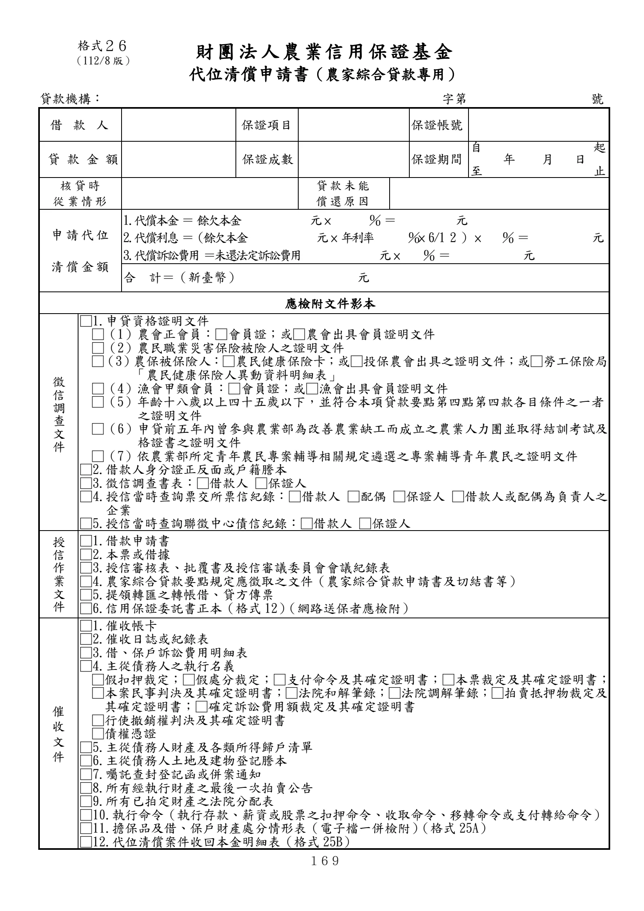
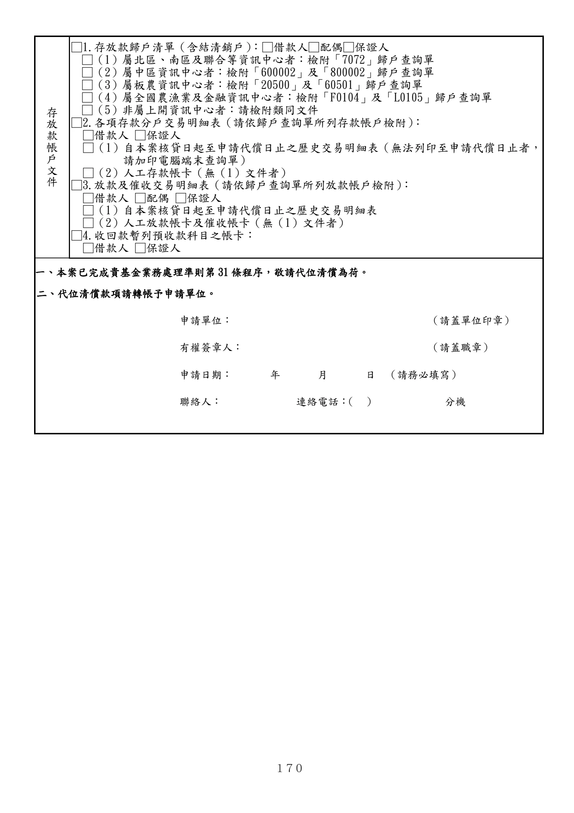

格式 26：代位清償申請書（農家綜合貸款專用）
正式書表版面請以原始PDF為準
下列擷取文字僅供搜尋與輔助查閱，未重新設計為線上表單。
手冊頁：169 PDF頁：181／203

查看PDF文字層
下列文字取自PDF既有文字層，僅供搜尋、複製與無障礙輔助。複雜表格的欄列位置可能失真，正式內容請以原頁預覽或PDF為準。
財團法人 農業信用保證基金
代位清償申請書（農家綜合貸款專用）
貸款機構： 字第 號
借款 人 保證項目 保證帳號
貸 款 金 額 保證成數 保證期間
自 起
年 月 日
至 止
核貸時
從業情形 貸款未能
償還原因
申請代位
清償金額
1.代償本金 ＝ 餘欠本金 元 × ％ ＝ 元
2.代償利息 ＝（餘欠本金 元 × 年利率 ％× 6/1 2 ） × ％ ＝ 元
3.代償訴訟費用 ＝未還法定訴訟費用 元 × ％ ＝ 元
合 計＝（新臺幣） 元
應檢附文件影本
徵
信
調
查
文
件
□1.申貸資格證明文件
□（1）農會正會員：□會員證；或□農會出具會員證明文件
□（2）農民職業災害保險被險人之證明文件
□（3）農保被保險人：□農民健康保險卡；或□投保農會出具之證明文件；或□勞工保險局
「農民健康保險人異動資料明細表」
□（4）漁會甲類會員：□會員證；或□漁會出具會員證明文件
□（5）年齡十八歲以上四十五歲以下，並符合本項貸款要點第四點第四款各目條件之一者
之證明文件
□（6）申貸前五年內曾參與農業部為改善農業缺工而成立之農業人力團並取得結訓考試及
格證書之證明文件
□（7）依農業部所定青年農民專案輔導相關規定遴選之專案輔導青年農民之證明文件
□2.借款人身分證正反面或戶籍謄本
□3.徵信調查書表：□借款人 □保證人
□4.授信當時查詢票交所票信紀錄：□借款人 □配偶 □保證人 □借款人或配偶為負責人之
企業
□5.授信當時查詢聯徵中心債信紀錄：□借款人 □保證人
授
信
作
業
文
件
□1.借款申請書
□2.本票或借據
□3.授信審核表、批覆書及授信審議委員會會議紀錄表
□4.農家綜合貸款要點規定應徵取之文件（農家綜合貸款申請書及切結書等）
□5.提領轉匯之轉帳借、貸方傳票
□6.信用保證委託書正本（格式 12）（網路送保者應檢附）
催
收
文
件
□1.催收帳卡
□2.催收日誌或紀錄表
□3.借、保戶訴訟費用明細表
□4.主從債務人之執行名義
□假扣押裁定；□假處分裁定；□支付命令及其確定證明書；□本票裁定及其確定證明書；
□本案民事判決及其確定證明書；□法院和解筆錄；□法院調解筆錄；□拍賣抵押物裁定及
其確定證明書；□確定訴訟費用額裁定及其確定證明書
□行使撤銷權判決及其確定證明書
□債權憑證
□5.主從債務人財產及各類所得歸戶清單
□6.主從債務人土地及建物登記謄本
□7.囑託查封登記函或併案通知
□8.所有經執行財產之最後一次拍賣公告
□9.所有已拍定財產之法院分配表
□10.執行命令（執行存款、薪資或股票之扣押命令、收取命令、移轉命令或支付轉給命令）
□11.擔保品及借、保戶財產處分情形表（電子檔一併檢附）（格式 25A）
□12.代位清償案件收回本金明細表（格式 25B）
格式２６
（112/8 版）手冊頁：170 PDF頁：182／203

查看PDF文字層
下列文字取自PDF既有文字層，僅供搜尋、複製與無障礙輔助。複雜表格的欄列位置可能失真，正式內容請以原頁預覽或PDF為準。
存 放 款 帳 戶 文 件 □1.存放款歸戶清單（含結清銷戶）：□借款人□配偶□保證人 □（1）屬北區、南區及聯合等資訊中心者：檢附「7072」歸戶查詢單 □（2）屬中區資訊中心者：檢附「600002」及「800002」歸戶查詢單 □（3）屬板農資訊中心者：檢附「20500」及「60501」歸戶查詢單 □（4）屬全國農漁業及金融資訊中心者：檢附「F0104」及「L0105」歸戶查詢單 □（5）非屬上開資訊中心者：請檢附類同文件 □2.各項存款分戶交易明細表（請依歸戶查詢單所列存款帳戶檢附）： □借款人 □保證人 □（1）自本案核貸日起至申請代償日止之歷史交易明細表（無法列印至申請代償日止者， 請加印電腦端末查詢單） □（2）人工存款帳卡（無（1）文件者） □3.放款及催收交易明細表（請依歸戶查詢單所列放款帳戶檢附）： □借款人 □配偶 □保證人 □（1）自本案核貸日起至申請代償日止之歷史交易明細表 □（2）人工放款帳卡及催收帳卡（無（1）文件者） □4.收回款暫列預收款科目之帳卡： □借款人 □保證人 一、本案已完成貴基金業務處理準則第31 條程序，敬請代位清償為荷。 二、代位清償款項請轉帳予申請單位。 申請單位： （請蓋單位印章） 有權簽章人： （請蓋職章） 申請日期： 年 月 日 （請務必填寫） 聯絡人： 連絡電話： （ ） 分機